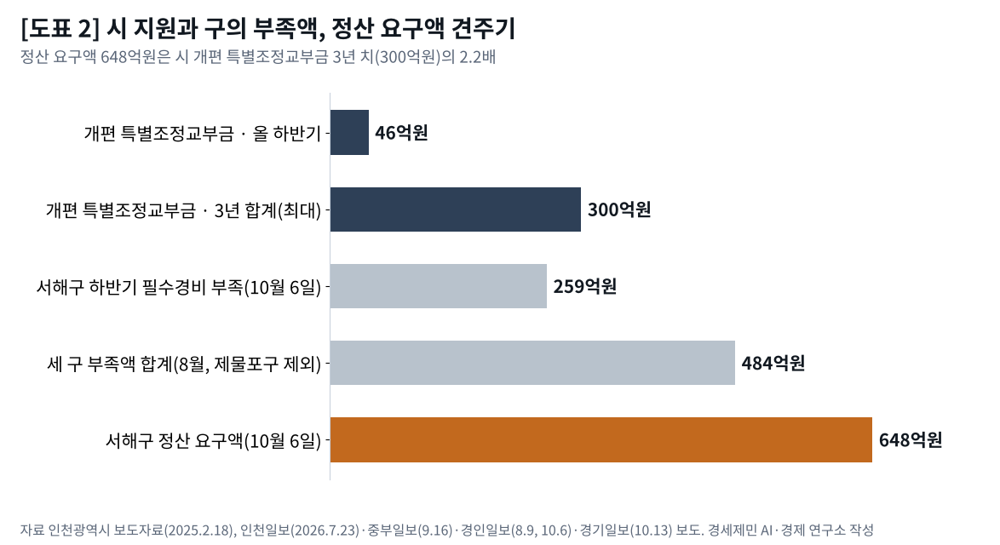
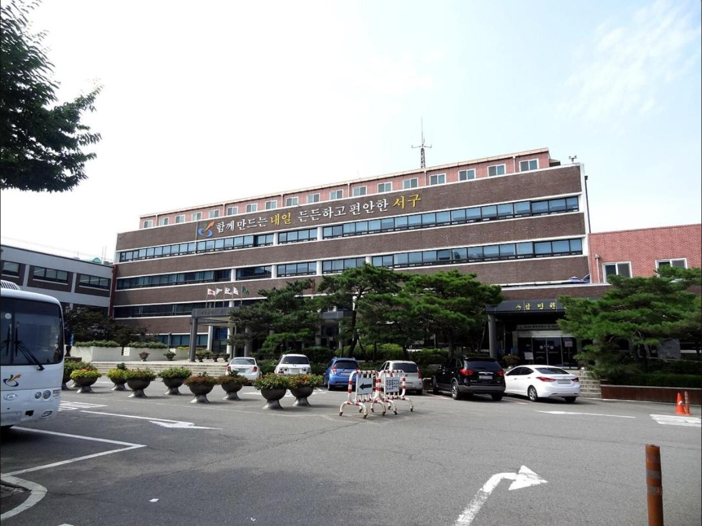

[지방재정 브리핑] 인천 신설구 100일, 법은 「지원하며」라 썼는데 개편 국비 예산은 두 해째 0원
2026년 예산은 근거가 없어 빠지고, 2027년 정부안은 근거를 만든 뒤에도 빠져
서해구 정산 요구 648억원, 시 개편 특별조정교부금 3년 치의 두 배 넘어
국내외 실증연구로 본 분구 비용, 한 번 내는 설치비 아닌 해마다 드는 행정비
AI경세제민=김갑봉 기자 | 서해구는 정산금이 들어오지 않으면 12월 직원 급여도 줄 수 없다고 밝혔다. 인천 행정체제 개편 100일, 새 구 곳간 사정이 이렇다.
7월 1일 중구와 동구가 폐지되고 제물포구와 영종구가 생겼다. 서구 관할에서 검단구가 떨어져 나갔고, 남은 서구는 이름을 서해구로 바꿨다. 인천은 2군 9구가 됐다.
법은 국가와 인천시가 새 구 설치 비용을 지원한다고 쓴다. 그러나 개편 운영 지원 국비는 2026년 예산에도, 2027년 정부예산안에도 없다. 법령과 조례, 인천시 발표, 국내외 실증연구를 맞대어 그 틈을 짚는다.

근거가 없어 빠진 2026년 예산
인천시는 2026년 예산에 개편 국비 636억원을 요청했다. 시는 지난해 11월 국회 행정안전위원회가 이를 모두 반영했다고 밝혔다. 그러나 12월 2일 본회의를 통과한 예산에는 한 푼도 남지 않았다(서울신문·경기일보 보도).
경기일보는 그 이유로 국비를 줄 법적 근거가 없다는 점을 들었다.
그해 정부 돈으로 확인되는 것은 행정안전부 특별교부세다.
8월 재난안전 특별교부세 18억원은 전산·통신 기반에, 12월 14억원은 검단구 임시청사 정비에 배정됐다. 확인되는 두 건을 더해 32억원이다. 요청액 636억원에 견주면 5%다.
같은 날 본회의는 설치법 개정 대안도 의결했다.
국회에 나온 개정안 가운데 2025년 6월 30일 모경종 의원 등 14명이 낸 안은 국가가 「행정적·재정적 지원을 할 수 있도록」 하는 내용이었다. 이 안은 대안에 반영돼 폐기됐다.
대안은 12월 30일 법률 제21247호로 공포됐고, 이때 제3조가 새로 들어갔다. 예산 문이 먼저 닫히고 근거가 뒤에 열렸다.
제3조는 이렇게 쓴다. 「국가 및 인천광역시는 인천광역시 제물포구·영종구 및 검단구 설치에 소요되는 비용을 지원하며, 보조금·지방교부세, 재정 투자·융자 등 재정상 특별한 지원을 할 수 있다」.
조문은 「지원하며」로 맺는다. 설치 비용 지원은 해야 할 일로 읽힌다. 그런데 법제처가 붙인 개정이유는 「지원할 수 있도록」이라고 요약한다. 법 문언과 정부 요약이 의무와 재량 사이에서 갈린다.
법 이름에 서해구는 없다. 서해구는 새로 설치한 구가 아니라 이름을 바꾼 구여서 「인천광역시 서구 명칭 변경에 관한 법률」을 따른다.
근거를 만든 뒤에도 빠진 2027년 정부예산안
박찬대 인천시장은 7월 24일 박홍근 기획예산처 장관을 만나 개편 운영 지원 국비 696억원을 건의했다. 시는 창원시와 청주시 같은 통합 지방자치단체 지원 사례를 근거로 들었다.
정부는 9월 3일 2027년 예산안을 국회에 냈다. 인천 국비는 역대 최대인 7조863억원이다. 올해 6조4735억원보다 6128억원(9.5%) 늘었다.
그러나 제물포·영종·검단 세 구 신설에 필요한 돈은 그 안에 없다. 시는 9월 14일 국회를 찾아 490억원을 추가로 반영해 달라고 요청했다.
490억원은 7월 건의액 696억원보다 206억원(29.6%) 적다. 근거는 생겼는데 요청액은 줄었다. 남은 자리는 국회 예산 심의다.
490억원 명목은 세 구 신설이다. 분구 비용을 먼저 댄 서해구는 이 요청에도 이름이 없다.
![[도표 1] 인천 행정체제 개편 국비, 요청과 반영. 자료 인천광역시 보도자료, 서울신문·경기일보·국제뉴스·한국NGO신문 보도. 경세제민 AI·경제 연구소 작성](img/fis01_02.png)
교부율 22.3%와 특별조정교부금 300억원
국비가 오지 않는 동안 버팀목은 시 재원이다. 인천시는 지난해 2월 18일 자치구 조정교부금 교부율을 20%에서 22.3%로 올린다고 발표했다. 2013년부터 열 해 넘게 묶어 둔 비율이다.
시가 맡긴 제도개선 연구용역은 21.5%를 제안했다. 시는 더 올려 광역시 평균 22.03%보다 높게 정했다.
2024년 본예산 기준으로 해마다 920억원 이상이 자치구로 더 간다. 일반조정교부금 828억원, 특별조정교부금 92억원이다.
조례도 따라 바뀌었다. 「인천광역시 조정교부금 배분 조례」는 구 몫 재원을 시세 보통세의 22.3%로 정하고, 그 10%를 특별조정교부금으로 둔다.
개편으로 일반조정교부금이 줄어든 구에는 감소분을 특별조정교부금으로 보전할 수 있게 했다. 이 특례는 2028년 말까지 효력이 있다.
새 구 살림을 셈하는 방식에도 완충 장치를 뒀다. 새 구와 서구 기준수입액은 그해 지방세와 경상적 세외수입 추계액의 80%로 잡는다. 세입을 낮춰 잡으면 교부금 산정에서 그만큼 유리해진다. 이 적용례는 2030년 말까지다.
청사와 전산, 통신 구축비로는 개편 자치구에 3년간 해마다 100억원 범위에서 특별조정교부금을 더 준다. 3년을 다 채워도 300억원이다. 올 하반기 몫은 46억원이다(인천일보·중부일보 보도).
8월 경인일보 집계로 서해구 297억원, 검단구 152억원, 영종구 35억원이 부족했다. 세 구만 더해도 484억원이다. 하반기 46억원은 그 9.5%에 그친다.
서해구와 검단구, 정산금 648억원
다툼은 상반기 장부에서 시작한다. 분구 전 여섯 달 동안 서구는 한 지갑으로 살림을 했다. 검단에서 거둔 세금도, 검단에 쓴 돈도 같은 장부에 섞여 있다.
서해구는 6월 30일 기준 검단지역 세입을 387억원, 세출을 968억원으로 셌다. 8월 12일 차액 581억원을 정산하라는 공문을 보냈다.
검단구가 다시 확인해 달라고 하자 서해구는 추가경정예산까지 다시 셈해 10월 6일 648억원을 통보했다(인천일보·경기일보 보도).
검단구 셈은 다르다. 상반기 지출 가운데 서구 시절 행정과 사업에 쓴 돈은 정산금에서 빼야 한다고 본다. 김진규 검단구청장은 모든 비용을 검단구가 내야 하는지는 논의가 필요하다고 했다(경기일보·복지타임즈 보도).

서해구가 10월 6일 밝힌 하반기 필수경비 부족액은 259억원이다. 인건비가 약 108억원으로 가장 크다. 폐기물 처리비 35억7000만원, 명칭 변경 안내표지판 24억6000만원이 뒤를 잇는다.
13일 보도로는 서해구가 늦어도 다음 주 중 인천시에 분쟁조정을 신청할 방침이다. 행정심판과 소송까지 각오한다고 했다(한국NGO신문·경인일보 보도).
연구소가 셈하면 정산 요구액 648억원은 시가 3년간 개편 자치구에 더 줄 특별조정교부금 300억원과 견주면 2.2배다. 한 구가 이웃 구에 청구한 돈이 시 지원 3년 치를 넘는다.
조례에는 눈여겨볼 장치가 하나 있다. 교부금을 셈하는 기준수입액 기초자료를 나눌 때 구끼리 협의가 어려우면 시장이 정한 배분기준을 따른다. 상반기 세입·세출 정산에도 이런 기준이 미리 있어야 했다.

분구 비용은 한 번으로 끝나지 않는다
시는 국비를 건의하며 창원과 청주 통합 지원 사례를 들었다. 그런데 국내 실증연구에서 통합 뒤 행정비가 줄었다는 결과는 뚜렷하지 않다.
최흥석·정재진(2005)은 1995년 도농통합시 30곳을 일반시 30곳과 견줬다.
통합 시·군 1인당 행정비용은 1991~1993년 47만1000원에서 통합 뒤 1995~1997년 96만9000원으로 뛰었다. 같은 시기 일반시는 79만6000원이었다.
장인수·손호성(2021)은 합성통제법으로 청주·청원 통합을 분석했다. 통합 뒤에도 예산 규모는 줄지 않았다.
정재진·이병량(2010)도 1996~2007년 패널 분석에서 단기에는 행정비용 절감과 규모의 경제가 나타나지 않았다고 보고했다. 장기 규모의 경제는 통합시가 컸지만, 소득과 도시화 같은 구조 요인 영향이 더 컸다고 덧붙였다.
한국지방세연구원 보고서도 통합시 행정비용 절감 효과가 거의 나타나지 않았다고 봤다.
분구는 반대 방향이다.
브라질에서 1990년대 새로 갈라져 나온 시 1016곳을 이중차분법으로 본 연구가 있다(Lima·Silveira Neto, 2018).
분리된 시는 1인당 자본지출이 14.7% 늘었다. 연구자들은 그 원인으로 규모의 경제가 줄어든 점과 지대추구를 들었다.
덴마크 2007년 개혁을 분석한 Blom-Hansen 등(2014)은 주민 1인당 행정비에 규모 효과가 상당하다고 했다.
같은 개혁 뒤 분야별 세출을 본 Blom-Hansen 등(2016)은 전체로 보면 효과가 없었다고 보고했다.
결과가 한쪽으로만 나오지는 않는다. 스웨덴 분할을 본 Erlingsson 등(2024)은 1인당 지출이 늘기도, 그대로이기도, 줄기도 했다고 보고했다.
연구들이 함께 가리키는 것은 하나다. 구를 나누는 비용은 청사와 전산 같은 한 번 내는 설치비로 끝나지 않는다. 작아진 구가 행정을 꾸리는 비용은 해마다 든다.
통합해도 줄지 않던 행정비가, 나누면 늘 수 있다.
그래서 세 곳에 묻는다. 행정안전부와 기획예산처에는 제3조가 「지원하며」라고 쓴 설치 비용을 언제, 어느 사업으로 반영할지 묻는다.
인천시에는 서해구와 검단구 정산 기준과 시한을 묻는다. 국회에는 분구 비용을 먼저 댄 서해구가 지원에서 빠져도 되는지 묻는다.
3년 한시 특별조정교부금과 한 해 국비로는 해마다 드는 비용을 메울 수 없다. 조정교부금 산식처럼 해마다 도는 재원에 분구 비용을 담는 논의가 필요하다.
행정체제 개편은 국회가 법으로 정하고 인천시가 설계했다. 비용은 지금 구청 금고로 내려와 있다. 법에 쓴 「지원하며」가 예산서에 숫자로 찍힐 때 개편은 비로소 끝난다.
읽을 때 붙여 둘 것
서해구 정산금 581억원은 8월 12일 공문 값이고, 648억원은 10월 6일 재산정 값이다. 서해구 부족액 297억원은 8월 보도, 259억원은 10월 6일 발표다. 시와 두 구는 10월 8일 처음 만나기로 했으나, 그 결과는 14일까지 보도로 확인되지 않는다.
참고문헌
논문
- Blom-Hansen, J., Houlberg, K., & Serritzlew, S. (2014). Size, Democracy, and the Economic Costs of Running the Political System. American Journal of Political Science, 58(4), 790–803. https://doi.org/10.1111/ajps.12096
- Blom-Hansen, J., Houlberg, K., Serritzlew, S., & Treisman, D. (2016). Jurisdiction Size and Local Government Policy Expenditure: Assessing the Effect of Municipal Amalgamation. American Political Science Review, 110(4), 812–831.
- Erlingsson, Klarin, & Mörk (2024). Does size matter? Evidence from municipal splits. Journal of Regional Science, 64(3), 700–731. https://doi.org/10.1111/jors.12679
- Lima, R. C. A., & Silveira Neto, R. M. (2018). Secession of municipalities and economies of scale: Evidence from Brazil. Journal of Regional Science, 58(1), 159–180. https://doi.org/10.1111/jors.12348
- 최흥석·정재진(2005). 「도농통합의 재정적 효과에 관한 연구」. 『지방행정연구』 19(4), 145–172. 한국지방행정연구원. https://krila.re.kr/download/thesis/146
- 정재진·이병량(2010). 「행정구역 개편의 학습 정보로서 시·군 통합의 효과 분석」. 『지방행정연구』 24(3), 57–89. https://krila.re.kr/download/thesis/680
- 장인수·손호성(2021). 「기초지자체 통합 효과 분석: 청주-청원 통합 사례를 중심으로」. 『국토연구』 111, 25–44. https://doi.org/10.15793/kspr.2021.111..002
연구보고서
- 이상훈·이정훈. 「지방자치단체 행정구역 통합의 재정효율성 성과 평가」. 한국지방세연구원. https://www.kilf.re.kr/cmm/fms/PDF.do?atchFileId=FILE_000000000004951&fileSn=0
법령·조례·공식 자료
- 「인천광역시 제물포구·영종구 및 검단구 설치 등에 관한 법률」(법률 제21247호, 2025년 12월 30일 일부개정) 제3조와 제정·개정이유. 국가법령정보센터
- 「인천광역시 서구 명칭 변경에 관한 법률」(법률 제21734호). 국가법령정보센터
- 「인천광역시 조정교부금 배분 조례」(인천광역시조례 제7616호, 2025년 11월 12일 일부개정, 2026년 7월 1일 시행) 제4조·제14조, 부칙 제2조·제3조·제5조. 국가법령정보센터
- 국민참여입법센터 국회입법현황, 「인천광역시 제물포구·영종구 및 검단구 설치 등에 관한 법률 일부개정법률안」(모경종 의원 등 14인, 제2211162호, 2025년 6월 30일 발의, 2025년 12월 2일 본회의 대안반영폐기). https://opinion.lawmaking.go.kr/gcom/nsmLmSts/out/2211162/detailRP
- 인천광역시 보도자료, 「인천시, 자치구 조정교부금 교부율 20%에서 22.3%로 대폭 상향」, 2025년 2월 18일, 재정담당관
- 인천광역시 보도자료, 「박찬대 시장, 기획예산처 장관 만나 국비 요청」, 2026년 7월 24일, 재정담당관
- 인천광역시 보도자료, 「인천시, 내년도 국비 7조 시대 활짝 연다…역대 최대」, 2026년 9월 7일, 재정담당관
- 인천광역시 보도자료, 「인천시, 국회 찾아 국비 939억 원 추가 확보 총력」, 2026년 9월 14일, 재정담당관
교차검증한 보도
- 서울신문, 「인천시 행정체제 개편…국비 636억 국회 상임위 반영」, 2025년 11월 19일; 「인천 행정체제 개편 6개월 남았는데…국비 확보 실패 '비상'」, 2025년 12월 4일
- 경기일보, 「인천, 행정체제 개편 앞두고…영종·검단구 국비 실패 '비상'」, 2025년 12월 3일
- 국제뉴스, 「인천시, 신설구 출범 대비 특별교부세(18억) 확보」, 2025년 8월 29일
- 한국NGO신문, 「인천시, 행정체제 개편 관련 행안부 특별교부세 14억 확보」, 2025년 12월 22일; 「'재정난' 서해구, 다음 주 인천시에 분쟁조정 신청」, 2026년 10월 13일
사진
※ 이 브리핑은 인공지능을 활용해 작성했습니다.
관련기사
- [거시경제] 이윤은 18.5% 늘고 임금은 1.9% 늘었다
- [가계부채 브리핑] 가계대출 9개월 만에 2조2000억원 감소, 주택담보대출은 3조3000억원 늘어
- 수출 1209억달러 역대 최대, 제조업 고용보험 가입자는 외국인 빼면 4000명 줄어
- 인천시와 군·구는 무엇을 연구에 맡기나, 정책연구 727건을 다 세어 봤다
저작권자 © AI경세제민 무단전재 및 재배포, AI학습 및 활용 금지